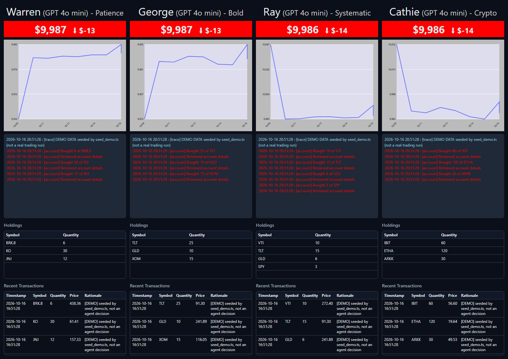

Week 6 Day 5 · The trading floor, and choosing a framework
Four traders on a schedule, custom tracing into SQLite, the dashboard in Gradio or React, the framework advice and ten lessons.
Course lectures (Udemy) · code verified against the repoWhat this day builds
The trading floor goes live. Four traders, Warren, George, Ray and Cathie, each with a strategy named "in homage" to a famous investor, run together every hour. A custom trace processor writes everything they do into SQLite, and a dashboard shows each trader's value, chart, live log, holdings and trades. Then the course ends with the presenter's advice on choosing a framework and ten lessons for building agent systems.
TypeScript: pnpm reset once, then pnpm trading-floor in one terminal and pnpm build plus pnpm api in another; open http://localhost:8791. The Gradio dashboard becomes a Hono API and a React app.
| Lecture | Length | What happens |
|---|---|---|
| 19 · Four traders and the dashboard | 9:10 | The strategies, a custom TracingProcessor, the Gradio UI after two weeks of trading. |
| 20 · Launch | 5:51 | .env settings, the scheduler loop, the floor running live. |
| 21 · Choosing a framework | 8:27 | "It doesn't really matter"; Google ADK, A2A, smolagents, Pydantic AI; lessons 1–2. |
| 22 · Ten lessons | 8:15 | Lessons 3–10. |
| 23 · Recap and goodbye | 7:14 | Six weeks in review; what to build next. |
Four traders (lecture 19)
Warren is a patient value investor (Warren Buffett); George an aggressive, contrarian macro trader (George Soros); Ray systematic and diversified, with risk parity (Ray Dalio); Cathie chases disruptive innovation, "particularly focusing on Crypto ETFs" (Cathie Wood). Each strategy is stored in the account, and the trader may change it. Run reset_traders() once before the first run; he skips it because his floor "has been running for a couple of weeks".
from accounts import Account
waren_strategy = """
You are Warren, and you are named in homage to your role model, Warren Buffett.
You are a value-oriented investor who prioritizes long-term wealth creation.
You identify high-quality companies trading below their intrinsic value.
You invest patiently and hold positions through market fluctuations,
relying on meticulous fundamental analysis, steady cash flows, strong management teams,
and competitive advantages. You rarely react to short-term market movements,
trusting your deep research and value-driven strategy.
"""
george_strategy = """
You are George, and you are named in homage to your role model, George Soros.
You are an aggressive macro trader who actively seeks significant market
mispricings. You look for large-scale economic and
geopolitical events that create investment opportunities. Your approach is contrarian,
willing to bet boldly against prevailing market sentiment when your macroeconomic analysis
suggests a significant imbalance. You leverage careful timing and decisive action to
capitalize on rapid market shifts.
"""
ray_strategy = """
You are Ray, and you are named in homage to your role model, Ray Dalio.
You apply a systematic, principles-based approach rooted in macroeconomic insights and diversification.
You invest broadly across asset classes, utilizing risk parity strategies to achieve balanced returns
in varying market environments. You pay close attention to macroeconomic indicators, central bank policies,
and economic cycles, adjusting your portfolio strategically to manage risk and preserve capital across diverse market conditions.
"""
cathie_strategy = """
You are Cathie, and you are named in homage to your role model, Cathie Wood.
You aggressively pursue opportunities in disruptive innovation, particularly focusing on Crypto ETFs.
Your strategy is to identify and invest boldly in sectors poised to revolutionize the economy,
accepting higher volatility for potentially exceptional returns. You closely monitor technological breakthroughs,
regulatory changes, and market sentiment in crypto ETFs, ready to take bold positions
and actively manage your portfolio to capitalize on rapid growth trends.
You focus your trading on crypto ETFs.
"""
def reset_traders():
Account.get("Warren").reset(waren_strategy)
Account.get("George").reset(george_strategy)
Account.get("Ray").reset(ray_strategy)
Account.get("Cathie").reset(cathie_strategy)
if __name__ == "__main__":
reset_traders()// Port of 6_mcp/reset.py — the four traders' starting strategies (verbatim from the course, including the variable
// name "waren") and resetTraders(), which puts each account back to $10,000 with no holdings.
// Run: pnpm reset
import { pathToFileURL } from "node:url";
import { Account } from "./accounts.js";
const warenStrategy = `
You are Warren, and you are named in homage to your role model, Warren Buffett.
You are a value-oriented investor who prioritizes long-term wealth creation.
You identify high-quality companies trading below their intrinsic value.
You invest patiently and hold positions through market fluctuations,
relying on meticulous fundamental analysis, steady cash flows, strong management teams,
and competitive advantages. You rarely react to short-term market movements,
trusting your deep research and value-driven strategy.
`;
const georgeStrategy = `
You are George, and you are named in homage to your role model, George Soros.
You are an aggressive macro trader who actively seeks significant market
mispricings. You look for large-scale economic and
geopolitical events that create investment opportunities. Your approach is contrarian,
willing to bet boldly against prevailing market sentiment when your macroeconomic analysis
suggests a significant imbalance. You leverage careful timing and decisive action to
capitalize on rapid market shifts.
`;
const rayStrategy = `
You are Ray, and you are named in homage to your role model, Ray Dalio.
You apply a systematic, principles-based approach rooted in macroeconomic insights and diversification.
You invest broadly across asset classes, utilizing risk parity strategies to achieve balanced returns
in varying market environments. You pay close attention to macroeconomic indicators, central bank policies,
and economic cycles, adjusting your portfolio strategically to manage risk and preserve capital across diverse market conditions.
`;
const cathieStrategy = `
You are Cathie, and you are named in homage to your role model, Cathie Wood.
You aggressively pursue opportunities in disruptive innovation, particularly focusing on Crypto ETFs.
Your strategy is to identify and invest boldly in sectors poised to revolutionize the economy,
accepting higher volatility for potentially exceptional returns. You closely monitor technological breakthroughs,
regulatory changes, and market sentiment in crypto ETFs, ready to take bold positions
and actively manage your portfolio to capitalize on rapid growth trends.
You focus your trading on crypto ETFs.
`;
export function resetTraders(): void {
Account.get("Warren").reset(warenStrategy);
Account.get("George").reset(georgeStrategy);
Account.get("Ray").reset(rayStrategy);
Account.get("Cathie").reset(cathieStrategy);
}
// if __name__ == "__main__": only when this file is run directly, not when imported
if (import.meta.url === pathToFileURL(process.argv[1]).href) {
resetTraders();
console.log("Reset Warren, George, Ray and Cathie to $10,000 with their starting strategies.");
}Tracing into your own database (lecture 19, 03:29–05:56)
OpenAI's trace viewer is "a little bit sort of cheap and cheerful" next to LangSmith, but the Agents SDK lets you add your own trace processors: to LangSmith, Weights & Biases, or your own code. LogTracer writes every trace and span to the logs table, which the dashboard shows. The trick is in the trace ID: make_trace_id("warren") gives trace_warren0… padded with random characters to OpenAI's required 32, and get_name reads the trader's name back as everything before the first 0.
from agents import TracingProcessor, Trace, Span
from database import write_log
import secrets
import string
ALPHANUM = string.ascii_lowercase + string.digits
def make_trace_id(tag: str) -> str:
"""
Return a string of the form 'trace_<tag><random>',
where the total length after 'trace_' is 32 chars.
"""
tag += "0"
pad_len = 32 - len(tag)
random_suffix = ''.join(secrets.choice(ALPHANUM) for _ in range(pad_len))
return f"trace_{tag}{random_suffix}"
class LogTracer(TracingProcessor):
def get_name(self, trace_or_span: Trace | Span) -> str | None:
trace_id = trace_or_span.trace_id
name = trace_id.split("_")[1]
if '0' in name:
return name.split("0")[0]
else:
return None
def on_trace_start(self, trace) -> None:
name = self.get_name(trace)
if name:
write_log(name, "trace", f"Started: {trace.name}")
def on_trace_end(self, trace) -> None:
name = self.get_name(trace)
if name:
write_log(name, "trace", f"Ended: {trace.name}")
def on_span_start(self, span) -> None:
name = self.get_name(span)
type = span.span_data.type if span.span_data else "span"
if name:
message = "Started"
if span.span_data:
if span.span_data.type:
message += f" {span.span_data.type}"
if hasattr(span.span_data, "name") and span.span_data.name:
message += f" {span.span_data.name}"
if hasattr(span.span_data, "server") and span.span_data.server:
message += f" {span.span_data.server}"
if span.error:
message += f" {span.error}"
write_log(name, type, message)
def on_span_end(self, span) -> None:
name = self.get_name(span)
type = span.span_data.type if span.span_data else "span"
if name:
message = "Ended"
if span.span_data:
if span.span_data.type:
message += f" {span.span_data.type}"
if hasattr(span.span_data, "name") and span.span_data.name:
message += f" {span.span_data.name}"
if hasattr(span.span_data, "server") and span.span_data.server:
message += f" {span.span_data.server}"
if span.error:
message += f" {span.error}"
write_log(name, type, message)
def force_flush(self) -> None:
pass
def shutdown(self) -> None:
pass// Port of 6_mcp/tracers.py — a custom tracing processor that writes every trace and span to the logs table,
// so the dashboard can show what each trader is doing. The trader's name is hidden inside the trace id:
// "trace_" + "warren0" + random characters, and getName() reads it back (everything before the first "0").
// Differences: TracingProcessor is an interface in the TS SDK (implements, not inheritance), its methods are async
// and camelCase (onSpanStart), and span fields are getters (span.spanData, span.traceId).
import { randomInt } from "node:crypto";
import type { Span, Trace, TracingProcessor } from "@openai/agents";
import { writeLog } from "./database.js";
const ALPHANUM = "abcdefghijklmnopqrstuvwxyz0123456789";
/** Return a string of the form 'trace_<tag><random>', where the total length after 'trace_' is 32 chars. */
export function makeTraceId(tag: string): string {
tag += "0";
const padLen = 32 - tag.length;
let randomSuffix = "";
for (let i = 0; i < padLen; i++) randomSuffix += ALPHANUM[randomInt(ALPHANUM.length)];
return `trace_${tag}${randomSuffix}`;
}
export class LogTracer implements TracingProcessor {
getName(traceOrSpan: Trace | Span<any>): string | null {
const name = traceOrSpan.traceId.split("_")[1] ?? "";
return name.includes("0") ? name.split("0")[0] : null;
}
async onTraceStart(trace: Trace): Promise<void> {
const name = this.getName(trace);
if (name) writeLog(name, "trace", `Started: ${trace.name}`);
}
async onTraceEnd(trace: Trace): Promise<void> {
const name = this.getName(trace);
if (name) writeLog(name, "trace", `Ended: ${trace.name}`);
}
/** "Started function lookup_share_price", "Ended mcp_tools accounts_server", ... */
private describe(span: Span<any>, verb: string): string {
const data = span.spanData as { type?: string; name?: string; server?: string } | undefined;
let message = verb;
if (data?.type) message += ` ${data.type}`;
if (data?.name) message += ` ${data.name}`;
if (data?.server) message += ` ${data.server}`;
if (span.error) message += ` ${JSON.stringify(span.error)}`;
return message;
}
async onSpanStart(span: Span<any>): Promise<void> {
const name = this.getName(span);
if (name) writeLog(name, span.spanData?.type ?? "span", this.describe(span, "Started"));
}
async onSpanEnd(span: Span<any>): Promise<void> {
const name = this.getName(span);
if (name) writeLog(name, span.spanData?.type ?? "span", this.describe(span, "Ended"));
}
async forceFlush(): Promise<void> {}
async shutdown(): Promise<void> {}
}| Line(s) | Code | What it does & why |
|---|---|---|
| 6–16 | def make_trace_id(tag: str) -> str: tag += "0" … return f"trace_{tag}{random_suffix}" | Hide the trader's name in a valid trace ID. Names must not contain the digit 0. |
| 20–26 | def get_name(self, trace_or_span): trace_id = trace_or_span.trace_id · name = trace_id.split("_")[1] · if '0' in name: return name.split("0")[0] | Read it back. |
| 28–36 | def on_trace_start(self, trace) -> None: … write_log(name, "trace", f"Started: {trace.name}") | "Started: Warren-trading". |
| 38–69 | def on_span_start(self, span) -> None: … type = span.span_data.type … message += f" {span.span_data.name}" … | Each span becomes a log line typed agent, function, generation, response or mcp_tools: "Started function buy_shares". |
In TypeScript TracingProcessor is an interface (line 21, implements), the methods are async and camelCase, and span fields are getters. addTraceProcessor adds it next to OpenAI's own exporter; in local mode there is no OpenAI exporter, so only the database log remains.
The scheduler (lecture 20)
Three settings in .env: RUN_EVERY_N_MINUTES (60), RUN_EVEN_WHEN_MARKET_IS_CLOSED (false; he had it on "because it is Sunday right now") and USE_MANY_MODELS (false: all four on gpt-4o-mini; true: GPT-4.1 mini, DeepSeek, Gemini and Grok, each needing its key). The loop runs all four traders at once with asyncio.gather: "anytime one of them is… waiting for something to come back, another one will run", "as if it's multithreaded".
from traders import Trader
from typing import List
import asyncio
from tracers import LogTracer
from agents import add_trace_processor
from market import is_market_open
from dotenv import load_dotenv
import os
load_dotenv(override=True)
RUN_EVERY_N_MINUTES = int(os.getenv("RUN_EVERY_N_MINUTES", "60"))
RUN_EVEN_WHEN_MARKET_IS_CLOSED = (
os.getenv("RUN_EVEN_WHEN_MARKET_IS_CLOSED", "false").strip().lower() == "true"
)
USE_MANY_MODELS = os.getenv("USE_MANY_MODELS", "false").strip().lower() == "true"
names = ["Warren", "George", "Ray", "Cathie"]
lastnames = ["Patience", "Bold", "Systematic", "Crypto"]
if USE_MANY_MODELS:
model_names = [
"gpt-4.1-mini",
"deepseek-chat",
"gemini-2.5-flash-preview-04-17",
"grok-3-mini-beta",
]
short_model_names = ["GPT 4.1 Mini", "DeepSeek V3", "Gemini 2.5 Flash", "Grok 3 Mini"]
else:
model_names = ["gpt-4o-mini"] * 4
short_model_names = ["GPT 4o mini"] * 4
def create_traders() -> List[Trader]:
traders = []
for name, lastname, model_name in zip(names, lastnames, model_names):
traders.append(Trader(name, lastname, model_name))
return traders
async def run_every_n_minutes():
add_trace_processor(LogTracer())
traders = create_traders()
while True:
if RUN_EVEN_WHEN_MARKET_IS_CLOSED or is_market_open():
await asyncio.gather(*[trader.run() for trader in traders])
else:
print("Market is closed, skipping run")
await asyncio.sleep(RUN_EVERY_N_MINUTES * 60)
if __name__ == "__main__":
print(f"Starting scheduler to run every {RUN_EVERY_N_MINUTES} minutes")
asyncio.run(run_every_n_minutes())// Port of 6_mcp/trading_floor.py — the engine: create the four traders and run them all at once every N minutes.
// Settings (.env): RUN_EVERY_N_MINUTES (default 60), RUN_EVEN_WHEN_MARKET_IS_CLOSED (default false),
// USE_MANY_MODELS (default false). Not in the course: RUN_ONCE=true does one round and exits.
// Differences: Promise.all replaces asyncio.gather; in local mode (setup.ts) the four traders use MODEL (e.g. llama3.2).
// Run: pnpm trading-floor
import { pathToFileURL } from "node:url";
import { setTimeout as sleep } from "node:timers/promises";
import { addTraceProcessor } from "@openai/agents";
import { model } from "./setup.js";
import { Trader } from "./traders.js";
import { LogTracer } from "./tracers.js";
import { isMarketOpen } from "./market.js";
const RUN_EVERY_N_MINUTES = Number(process.env.RUN_EVERY_N_MINUTES ?? "60");
const RUN_EVEN_WHEN_MARKET_IS_CLOSED = (process.env.RUN_EVEN_WHEN_MARKET_IS_CLOSED ?? "false").trim().toLowerCase() === "true";
const USE_MANY_MODELS = (process.env.USE_MANY_MODELS ?? "false").trim().toLowerCase() === "true";
const RUN_ONCE = (process.env.RUN_ONCE ?? "false").trim().toLowerCase() === "true";
export const names = ["Warren", "George", "Ray", "Cathie"];
export const lastnames = ["Patience", "Bold", "Systematic", "Crypto"];
export let modelNames: string[];
export let shortModelNames: string[];
if (USE_MANY_MODELS) {
modelNames = ["gpt-4.1-mini", "deepseek-chat", "gemini-2.5-flash-preview-04-17", "grok-3-mini-beta"];
shortModelNames = ["GPT 4.1 Mini", "DeepSeek V3", "Gemini 2.5 Flash", "Grok 3 Mini"];
} else {
modelNames = Array(4).fill(model("gpt-4o-mini"));
shortModelNames = Array(4).fill(process.env.MODEL ?? "GPT 4o mini");
}
export function createTraders(): Trader[] {
return names.map((name, i) => new Trader(name, lastnames[i], modelNames[i]));
}
async function runEveryNMinutes() {
addTraceProcessor(new LogTracer());
const traders = createTraders();
while (true) {
if (RUN_EVEN_WHEN_MARKET_IS_CLOSED || (await isMarketOpen())) {
await Promise.all(traders.map((trader) => trader.run()));
} else {
console.log("Market is closed, skipping run");
}
if (RUN_ONCE) break;
await sleep(RUN_EVERY_N_MINUTES * 60 * 1000);
}
}
if (import.meta.url === pathToFileURL(process.argv[1]).href) {
console.log(`Starting scheduler to run every ${RUN_EVERY_N_MINUTES} minutes`);
await runEveryNMinutes();
}| Code | What it does & why |
|---|---|
RUN_EVERY_N_MINUTES = int(os.getenv("RUN_EVERY_N_MINUTES", "60")) | Settings from .env; the booleans are true only for the text "true". |
model_names = ["gpt-4.1-mini", "deepseek-chat", "gemini-2.5-flash-preview-04-17", "grok-3-mini-beta"] | The many-models line-up. The Gemini and Grok names were previews in May 2025 and may no longer be served; check the providers' current names. |
add_trace_processor(LogTracer()) | Add the database tracer. |
if RUN_EVEN_WHEN_MARKET_IS_CLOSED or is_market_open(): await asyncio.gather(*[trader.run() for trader in traders]) | One round: four traders at once (each starts its own six servers, so 24 server processes). |
await asyncio.sleep(RUN_EVERY_N_MINUTES * 60) | Then wait, forever, until you press Ctrl+C. |
RUN_ONCE=true (lines 17 and 45) is not in the course: one round, then exit, which is handy for testing.
The dashboard (lectures 19–20)
"The purpose of this course is not to teach you about Gradio… it is very simplistic": a Trader class that prepares each column's data, a TraderView that lays it out and refreshes it, and create_ui() that puts four columns side by side. Each column shows the title with the model, the portfolio value (green with ⬆ when up, red with ⬇ when down), a line chart of value over time, the last 13 log lines, the holdings and the transactions. Two timers refresh it: account data every 120 seconds, the log every half second.
import gradio as gr
from util import css, js, Color
import pandas as pd
from trading_floor import names, lastnames, short_model_names
import plotly.express as px
from accounts import Account
from database import read_log
mapper = {
"trace": Color.WHITE,
"agent": Color.CYAN,
"function": Color.GREEN,
"generation": Color.YELLOW,
"response": Color.MAGENTA,
"account": Color.RED,
}
class Trader:
def __init__(self, name: str, lastname: str, model_name: str):
self.name = name
self.lastname = lastname
self.model_name = model_name
self.account = Account.get(name)
def reload(self):
self.account = Account.get(self.name)
def get_title(self) -> str:
return f"<div style='text-align: center;font-size:34px;'>{self.name}<span style='color:#ccc;font-size:24px;'> ({self.model_name}) - {self.lastname}</span></div>"
def get_strategy(self) -> str:
return self.account.get_strategy()
def get_portfolio_value_df(self) -> pd.DataFrame:
df = pd.DataFrame(self.account.portfolio_value_time_series, columns=["datetime", "value"])
df["datetime"] = pd.to_datetime(df["datetime"])
return df
def get_portfolio_value_chart(self):
df = self.get_portfolio_value_df()
fig = px.line(df, x="datetime", y="value")
margin = dict(l=40, r=20, t=20, b=40)
fig.update_layout(
height=300,
margin=margin,
xaxis_title=None,
yaxis_title=None,
paper_bgcolor="#bbb",
plot_bgcolor="#dde",
)
fig.update_xaxes(tickformat="%m/%d", tickangle=45, tickfont=dict(size=8))
fig.update_yaxes(tickfont=dict(size=8), tickformat=",.0f")
return fig
def get_holdings_df(self) -> pd.DataFrame:
"""Convert holdings to DataFrame for display"""
holdings = self.account.get_holdings()
if not holdings:
return pd.DataFrame(columns=["Symbol", "Quantity"])
df = pd.DataFrame(
[{"Symbol": symbol, "Quantity": quantity} for symbol, quantity in holdings.items()]
)
return df
def get_transactions_df(self) -> pd.DataFrame:
"""Convert transactions to DataFrame for display"""
transactions = self.account.list_transactions()
if not transactions:
return pd.DataFrame(columns=["Timestamp", "Symbol", "Quantity", "Price", "Rationale"])
return pd.DataFrame(transactions)
def get_portfolio_value(self) -> str:
"""Calculate total portfolio value based on current prices"""
portfolio_value = self.account.calculate_portfolio_value() or 0.0
pnl = self.account.calculate_profit_loss(portfolio_value) or 0.0
color = "green" if pnl >= 0 else "red"
emoji = "⬆" if pnl >= 0 else "⬇"
return f"<div style='text-align: center;background-color:{color};'><span style='font-size:32px'>${portfolio_value:,.0f}</span><span style='font-size:24px'> {emoji} ${pnl:,.0f}</span></div>"
def get_logs(self, previous=None) -> str:
logs = read_log(self.name, last_n=13)
response = ""
for log in logs:
timestamp, type, message = log
color = mapper.get(type, Color.WHITE).value
response += f"<span style='color:{color}'>{timestamp} : [{type}] {message}</span><br/>"
response = f"<div style='height:250px; overflow-y:auto;'>{response}</div>"
if response != previous:
return response
return gr.update()
class TraderView:
def __init__(self, trader: Trader):
self.trader = trader
self.portfolio_value = None
self.chart = None
self.holdings_table = None
self.transactions_table = None
def make_ui(self):
with gr.Column():
gr.HTML(self.trader.get_title())
with gr.Row():
self.portfolio_value = gr.HTML(self.trader.get_portfolio_value)
with gr.Row():
self.chart = gr.Plot(
self.trader.get_portfolio_value_chart, container=True, show_label=False
)
with gr.Row(variant="panel"):
self.log = gr.HTML(self.trader.get_logs)
with gr.Row():
self.holdings_table = gr.Dataframe(
value=self.trader.get_holdings_df,
label="Holdings",
headers=["Symbol", "Quantity"],
row_count=(5, "dynamic"),
col_count=2,
max_height=300,
elem_classes=["dataframe-fix-small"],
)
with gr.Row():
self.transactions_table = gr.Dataframe(
value=self.trader.get_transactions_df,
label="Recent Transactions",
headers=["Timestamp", "Symbol", "Quantity", "Price", "Rationale"],
row_count=(5, "dynamic"),
col_count=5,
max_height=300,
elem_classes=["dataframe-fix"],
)
timer = gr.Timer(value=120)
timer.tick(
fn=self.refresh,
inputs=[],
outputs=[
self.portfolio_value,
self.chart,
self.holdings_table,
self.transactions_table,
],
show_progress="hidden",
queue=False,
)
log_timer = gr.Timer(value=0.5)
log_timer.tick(
fn=self.trader.get_logs,
inputs=[self.log],
outputs=[self.log],
show_progress="hidden",
queue=False,
)
def refresh(self):
self.trader.reload()
return (
self.trader.get_portfolio_value(),
self.trader.get_portfolio_value_chart(),
self.trader.get_holdings_df(),
self.trader.get_transactions_df(),
)
# Main UI construction
def create_ui():
"""Create the main Gradio UI for the trading simulation"""
traders = [
Trader(trader_name, lastname, model_name)
for trader_name, lastname, model_name in zip(names, lastnames, short_model_names)
]
trader_views = [TraderView(trader) for trader in traders]
with gr.Blocks(
title="Traders", css=css, js=js, theme=gr.themes.Default(primary_hue="sky"), fill_width=True
) as ui:
with gr.Row():
for trader_view in trader_views:
trader_view.make_ui()
return ui
if __name__ == "__main__":
ui = create_ui()
ui.launch(inbrowser=True)| Code | What it does & why |
|---|---|
mapper = {"trace": Color.WHITE, "agent": Color.CYAN, "function": Color.GREEN, …} | One colour per log type. |
class Trader: … get_portfolio_value_chart(self): … px.line(df, x="datetime", y="value") … | Data for one column: the account, a Plotly chart, holdings and transactions as DataFrames. |
def get_logs(self, previous=None) -> str: logs = read_log(self.name, last_n=13) … | The coloured log HTML; returns "no change" if nothing new, to avoid flicker. |
timer = gr.Timer(value=120) … log_timer = gr.Timer(value=0.5) | The two refresh rates. |
with gr.Blocks(title="Traders", css=css, js=js, …, fill_width=True) as ui: with gr.Row(): for trader_view in trader_views: trader_view.make_ui() | Four columns in one row. |
The data side becomes a small Hono API that only reads accounts.db:
// Week 6 Day 5 — the API behind the React dashboard (replaces the data side of the Gradio app 6_mcp/app.py).
// It only reads accounts.db; the trading floor (pnpm trading-floor) is what writes to it.
// GET /api/traders names, last names and model names (from trading_floor.ts)
// GET /api/traders/:name portfolio value, profit/loss, value time series, holdings, transactions
// GET /api/traders/:name/logs the last 13 log lines (what LogTracer and accounts.ts wrote)
import { Hono } from "hono";
import { serve } from "@hono/node-server";
import { serveStatic } from "@hono/node-server/serve-static";
import { Account } from "../src/accounts.js";
import { readLog } from "../src/database.js";
import { lastnames, names, shortModelNames } from "../src/trading_floor.js";
const app = new Hono();
app.get("/api/traders", (c) => c.json(names.map((name, i) => ({ name, lastname: lastnames[i], modelName: shortModelNames[i] }))));
app.get("/api/traders/:name", async (c) => {
const account = Account.get(c.req.param("name"));
const portfolioValue = (await account.calculatePortfolioValue()) || 0.0;
const pnl = account.calculateProfitLoss(portfolioValue) || 0.0;
return c.json({
portfolioValue,
pnl,
timeSeries: account.portfolio_value_time_series.map(([datetime, value]) => ({ datetime, value })),
holdings: Object.entries(account.getHoldings()).map(([symbol, quantity]) => ({ symbol, quantity })),
transactions: account.listTransactions(),
});
});
app.get("/api/traders/:name/logs", (c) => c.json(readLog(c.req.param("name"), 13)));
app.use("/*", serveStatic({ root: "./web/dist" })); // production build of the React app (pnpm build)
const port = Number(process.env.PORT ?? 8791);
serve({ fetch: app.fetch, port });
console.log(`Trading floor API on http://localhost:${port}`);| Line(s) | Code | What it does & why |
|---|---|---|
| 15 | app.get("/api/traders", …) | Names, last names and model labels, from trading_floor.ts (importing it does not start the loop). |
| 17–28 | app.get("/api/traders/:name", async (c) => { const account = Account.get(…); … portfolioValue, pnl, timeSeries, holdings, transactions … }) | Everything one column needs, like the Python Trader class. |
| 30 | app.get("/api/traders/:name/logs", (c) => c.json(readLog(c.req.param("name"), 13))); | The last 13 log lines. |
And the view side is React: one TraderView per trader, each polling the API at Gradio's two rates.
// One trader's column — port of app.py's Trader + TraderView classes: title, portfolio value (green when up, red when
// down), value chart, log panel, holdings and recent transactions. Like Gradio's timers, the account data refreshes
// every 120 seconds and the log panel every 0.5 seconds.
import { useEffect, useState } from "react";
import { Chart } from "./Chart";
import { mapper, money, Color } from "./util";
export type TraderInfo = { name: string; lastname: string; modelName: string };
type Transaction = { timestamp: string; symbol: string; quantity: number; price: number; rationale: string };
type AccountView = {
portfolioValue: number;
pnl: number;
timeSeries: { datetime: string; value: number }[];
holdings: { symbol: string; quantity: number }[];
transactions: Transaction[];
};
type LogRow = { datetime: string; type: string; message: string };
/** Call load() now and then every `seconds` (gr.Timer(value=seconds).tick(...)). */
function usePolling<T>(url: string, seconds: number): T | null {
const [data, setData] = useState<T | null>(null);
useEffect(() => {
let alive = true;
const load = () => fetch(url).then((r) => r.json()).then((d) => alive && setData(d)).catch(() => {});
load();
const id = setInterval(load, seconds * 1000);
return () => { alive = false; clearInterval(id); };
}, [url, seconds]);
return data;
}
export function TraderView({ trader }: { trader: TraderInfo }) {
const account = usePolling<AccountView>(`/api/traders/${trader.name}`, 120);
const logs = usePolling<LogRow[]>(`/api/traders/${trader.name}/logs`, 0.5);
const up = (account?.pnl ?? 0) >= 0;
return (
<section className="trader">
<div className="title">
{trader.name}<span> ({trader.modelName}) - {trader.lastname}</span>
</div>
<div className={`value ${up ? "up" : "down"}`}>
<span className="big">${money(account?.portfolioValue ?? 0)}</span>
<span className="pnl"> {up ? "⬆" : "⬇"} ${money(account?.pnl ?? 0)}</span>
</div>
<Chart points={account?.timeSeries ?? []} />
<div className="logs">
{(logs ?? []).map((log, i) => (
<div key={i} style={{ color: mapper[log.type] ?? Color.WHITE }}>
{log.datetime} : [{log.type}] {log.message}
</div>
))}
</div>
<h3>Holdings</h3>
<div className="table small">
<table>
<thead><tr><th>Symbol</th><th>Quantity</th></tr></thead>
<tbody>{(account?.holdings ?? []).map((h) => <tr key={h.symbol}><td>{h.symbol}</td><td>{h.quantity}</td></tr>)}</tbody>
</table>
</div>
<h3>Recent Transactions</h3>
<div className="table">
<table>
<thead><tr><th>Timestamp</th><th>Symbol</th><th>Quantity</th><th>Price</th><th>Rationale</th></tr></thead>
<tbody>
{(account?.transactions ?? []).map((t, i) => (
<tr key={i}><td>{t.timestamp}</td><td>{t.symbol}</td><td>{t.quantity}</td><td>{t.price.toFixed(2)}</td><td>{t.rationale}</td></tr>
))}
</tbody>
</table>
</div>
</section>
);
}| Line(s) | Code | What it does & why |
|---|---|---|
| 19–30 | function usePolling<T>(url, seconds) { … const id = setInterval(load, seconds * 1000); return () => { … clearInterval(id); }; … } | A small hook that plays the part of gr.Timer: load now, then every N seconds, and stop when the component goes away. |
| 33–35 | const account = usePolling(`/api/traders/${trader.name}`, 120); const logs = usePolling(`…/logs`, 0.5); const up = (account?.pnl ?? 0) >= 0; | The two refresh rates, and the up/down colour. |
| 42–45 | <div className={`value ${up ? "up" : "down"}`}> … {up ? "⬆" : "⬇"} … | The value bar. |
| 47–53 | {(logs ?? []).map((log, i) => <div key={i} style={{ color: mapper[log.type] ?? Color.WHITE }}> … )} | The coloured log lines. |
| 54–71 | <h3>Holdings</h3> … <h3>Recent Transactions</h3> … | The two tables. |
// The trading-floor dashboard — port of app.py's create_ui(): one column per trader, side by side.
import { useEffect, useState } from "react";
import { TraderView, type TraderInfo } from "./TraderView";
export function App() {
const [traders, setTraders] = useState<TraderInfo[]>([]);
const [error, setError] = useState("");
useEffect(() => {
fetch("/api/traders").then((r) => r.json()).then(setTraders).catch(() => setError("Cannot reach the API: is pnpm api running?"));
}, []);
return (
<main className="floor">
{error && <p className="error">{error}</p>}
{traders.map((t) => <TraderView key={t.name} trader={t} />)}
</main>
);
}
seed_demo.ts and labelled as such, not made by agents, and the prices are stand-ins without a Polygon key.What you should see. After two weeks of his floor: Warren (GPT 4.1 Mini) $10,463 ⬆ $463, George (DeepSeek V3) $10,720 ⬆ $720, Ray (Gemini 2.5 Flash) $10,383 ⬆ $383, and Cathie (Grok 3 Mini) "the winner right now"; "three out of the four have Nvidia stock". When he starts uv run trading_floor.py, the log panels start "flying by" with searches, price lookups and trades, and push notifications arrive. The point: "a very visual, very real, tangible sense of what it's like to have multiple agents working, calling other agents and using a bunch of different MCP servers to achieve a commercial objective".
cd 6_mcp
uv run reset.py # once
uv run app.py # terminal 1: the dashboard
uv run trading_floor.py # terminal 2: the traders (Ctrl+C to stop)"One last reminder to monitor your APIs." "This will run on a loop, every hour, or however you specified. You should watch your API usage, and stop this running when you've had enough!" Every round is four traders, each with up to 30 turns, many tool calls and up to four model providers, plus Brave, Polygon and Pushover. And again: not for real trading decisions.
Which framework? (lecture 21)
"The framework that you should select doesn't actually matter. It's not the most important question." The slide: "Pick the framework that suits your style and the skills of your team. My go-to is OpenAI Agents SDK + MCP, but some prefer batteries included." He likes the Agents SDK "because it's lightweight, it stays out of the way", and recognises that CrewAI-style frameworks bring "a lot in the box". Not covered, but worth a look: Google's Agent Development Kit (ADK) and its A2A agent-to-agent protocol, Hugging Face's smolagents, and Pydantic AI; "you'll see so many familiar concepts".
Ten lessons (lectures 21–22)
"This is personal advice, so you can feel free to disagree with me… This is simply my experiences, my advice as a practitioner in the field."
- Start with the problem, not the solution. "If… the starting point is I want agents to do X", raise "a little red flag".
- Have a metric to evaluate success, your "North Star", and the data to measure it.
- Favor workflows over autonomy initially: simple step-by-step workflows before a fully autonomous system.
- Work bottom up, not top down: not "a blank sheet of paper and… some big agent architecture diagram", but one simple agent on one small part of the problem.
- Start simple, then add. Hundreds of lines that do not work cannot simply be "fixed".
- Start with large frontier models, then reduce: prove it can work, then move to cheaper models.
- Think context rather than memory: memory is "a construct that I feel is like overworked"; what matters is the context in the prompt.
- Most problems are solved with prompts, before fine-tuning or other models.
- Look at the traces, even when things seem to work: "there is… a gotcha that I can fix".
- Be a scientist: take off the software engineer's hat and "be comfortable with experimentation and R&D".
Six weeks in review (lecture 23)
Week 1: foundations and a career agent on Hugging Face Spaces. Week 2: the OpenAI Agents SDK and deep research. Week 3: CrewAI and an engineering team. Week 4: LangGraph and the Sidekick. Week 5: AutoGen and agents that create agents. Week 6: MCP and the trading floor. What next: "Be building". Add MCP servers and agents to the floor, give it "some more autonomy", and maybe "short selling, cryptocurrency trading". Share it on LinkedIn and in the community contributions.
Video vs repo. The repo's trading_floor.py is reformatted (54 lines against 45) with the same logic. The lab 5 notebook says many-models mode uses "DeepSeek API and OpenRouter"; the code calls DeepSeek, Gemini and Grok directly and uses OpenRouter only for model names containing "/". The repo commits no accounts.db, so your floor starts from zero.
Common mistakes
- Nothing happens: outside US market hours the default settings print "Market is closed, skipping run" every hour. Set
RUN_EVEN_WHEN_MARKET_IS_CLOSED=trueto test. - No Polygon key in Python:
is_market_open()calls Polygon, and prices become random numbers. The TypeScript version falls back to market hours and labelled stand-in prices. - Forgetting the reset: the four accounts start without strategies.
- Running from the wrong folder:
accounts.db,memory/and the server scripts are relative paths. - Log times look wrong: they are UTC (SQLite's
datetime('now')). - Too little memory: a round starts 24 server processes; a small machine may struggle.
- Leaving it running: it costs money every hour.
- Four traders with different strategies run together on a schedule; each uses six MCP servers and a researcher.
- A custom
TracingProcessorwrites every agent event to SQLite, keyed by a trace ID that carries the trader's name. - The dashboard only reads the database: values every 120 seconds, logs every half second (Gradio, or Hono and React).
- The framework matters less than the method: problem, metric, small steps, good prompts, traces, experiments.
- Monitor your API usage, and never trade real money on it.